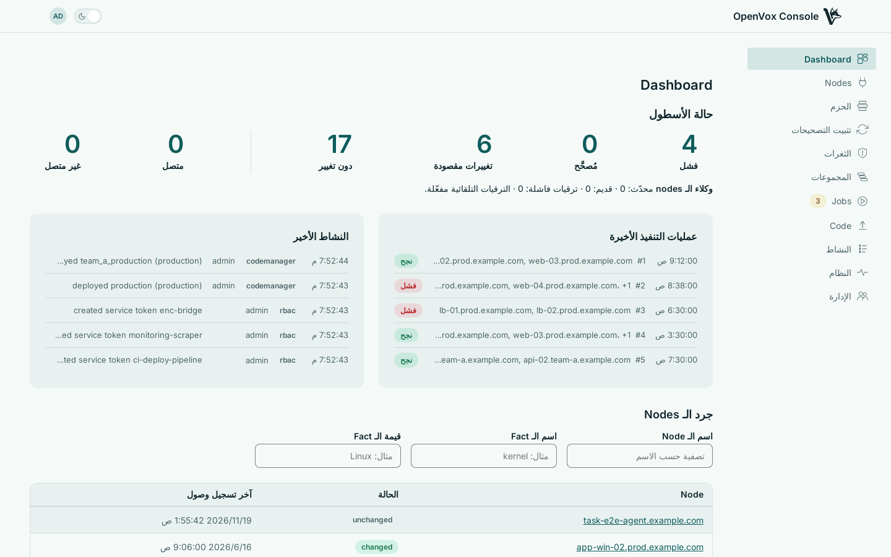

اطّلع على كل Node، وقرّر ما الذي يعمل وأين، وانشر كودك، وثبّت التصحيحات وشغّل الـ Tasks والـ Plans، وتصرّف بناءً على ما يعود إليك. وحدة تحكم Puppet Enterprise لـ OpenVox — ملف Go تنفيذي واحد، فوق openvox-server وopenvoxdb اللذين تشغّلهما أصلًا.


لماذا تختاره الفرق
كل صورة أدناه هي وحدة التحكم نفسها، ملتقطة من مثيل قيد التشغيل.

كل حزمة يبلّغ عنها كل Node، مطابَقة مع الثغرات المعروفة من OSV — أو من نسختك المرآة الخاصة منه، للمواقع التي لا منفذ لها إلى الخارج — ومن Tenable، مدمجةً في قائمة واحدة. اعرف ما الذي سيُصلحه الترقيع أولًا. والـ Node الذي لم يتمكن أحد من تقييمه يُعرض على هذه الحال بالضبط، ولا يُعرض سليمًا أبدًا.

تسجيل دخول موحَّد عبر OpenID Connect، تُربط فيه مجموعات موفّر الهوية لديك بأدوار وحدة التحكم عند كل تسجيل دخول. الأدوار مجرد مجموعات من الأذونات، فيرى الأشخاص ما تحتاج إليه وظيفتهم بالضبط. وتحصل الأتمتة على رموز خدمة خاصة بها، وكل تغيير مسجَّل.

ابدأ بمثيل واحد. وحين يكبر الأسطول، شغّل الصورة نفسها كمثيلات منفصلة لـ web وworker وorchestrator، في عنقود عبر TLS متبادل، وضع التصنيف بجوار الـ compilers لديك مباشرة. كل ما هو دائم يقيم في Postgres، فتأتي المثيلات وتذهب خلف موزّع الحِمل، وتعرضها كلها صفحة واحدة.

شغّل Puppet على Node واحد، أو على مجموعة مختارة، أو على كل Node تطابقه مجموعة، دون انتظار التشغيل المجدول التالي. تعود نتيجة كل Node على حدة — الحالة والمخرجات ورابط إلى الـ Report الذي أنتجه — والـ Node الذي كان غير متصل يقول ذلك فورًا.

نفّذ deploy من مستودع تحكم واحد أو واحد لكل فريق، عند الطلب أو مع كل push. ثم انظر، لكل مستودع، كم Node مُسنَد إلى الـ Environments الخاصة به مقابل كم Node يعمل منها فعليًا — الفارق الذي يخبرك بأن deploy لم يصل، أو بأن Nodes تشغّل كودًا لا يوجّهها إليه شيء.
وبقية ما تقدّمه وحدة التحكم
مبنيّ على المنظومة التي تشغّلها أصلًا
لا يزال openvox-server يجمّع الـ catalogs ويدير الـ CA؛ ولا يزال openvoxdb يخزّن الـ Facts والـ Reports. ويستمر وكلاؤك في التخاطب مع ما يتخاطبون معه الآن تمامًا — إذ تقدّم وحدة التحكم عقد ENC القياسي، فلا شيء يتغيّر في جانب الـ Node.
يشغّل docker compose up كلًّا من openvoxserver وopenvoxdb وPostgres ووحدة التحكم معًا، فتوجّه وكيلًا تجريبيًا إليها وترى Nodes الخاصة بك تظهر قبل أن تلتزم بأي شيء.
يُوزَّع OpenVox Console على هيئة صور حاويات تُبنى لمعماريتَي amd64 وarm64 مع كل push، وعلى هيئة ملف تنفيذي واحد. تأخذك أدلة التثبيت من مضيف فارغ إلى نشر عامل - openvoxserver وopenvoxdb وPostgres ووحدة التحكم - باستخدام الحاويات أو الحزم.